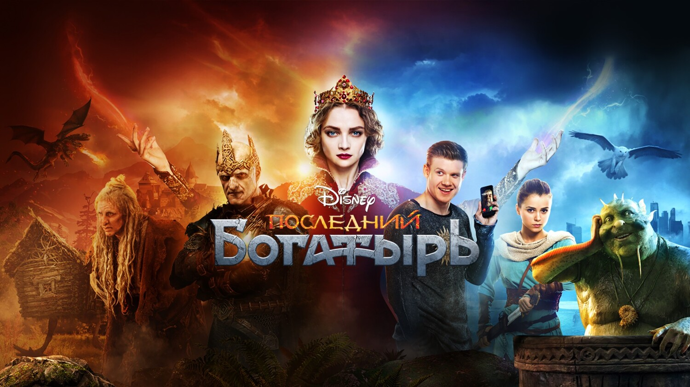

последний богатырь
описание
Последний богатырь.2017.1080p.WEB-DL.Rus. Иван, обычный парень, по воле случая переносится из современной Москвы в фантастическую страну Белогорье. В этом параллельном мире живут герои русских сказок, волшебство — неотъемлемая часть быта, а спорные вопросы решаются битвой на богатырских мечах. Неожиданно Иван оказывается в самом центре борьбы светлых и темных сил, вот только непонятно, почему главная роль в происходящих событиях, по всеобщему мнению, уготована именно ему
цена
300 p.

танец для великанши
песня какая то
иван
Главный герой фильма – эксцентричный молодой человек по имени Иван. Он живет в Москве и практикует магию. Как-то раз, выполняя просьбу одной клиентки, он сталкивается с определенными неприятностями. В попытках убежать от них Иван неожиданно попадает в Белогорье, волшебный мир, который населяют герои русских сказок и фольклора.
баба яга
Баба-яга Кощей Околдованные богатыри Кикиморы Колобок. Водяной Рыба-кит Избушка Чудо-юдо Жар-птицы. Баба-яга. Кощей. Околдованные богатыри. ... На съемках «Последнего богатыря» команда Горшенина гримировала двух персонажей одновременно и укладывалась при этом в два с половиной часа. Баба-яга. Баба-яга в фильме не коварная злодейка, она древняя знахарка и очень обаятельный персонаж. Поэтому требовалось создать добрый и немного гротескный образ. Кроме того, Яга по сюжету меняет возраст. Молодую Ягу сыграла Светлана Колпакова, для роли ей пришлось примерить крючковатый нос. А вот Елена Яковлева весь фильм ходила в парике и полном пластическом гриме. Скрыть.
калобок
Колобок вообще активно дерется: раскидывает богатырей и даже принимает участие в испытаниях на городской площади. Все это, конечно же, Гарик Харламов сыграть не мог, хотя актер и появлялся пару раз на съемочной площадке для съемки эмоций. Все активности Колобка отыгрывал баскетбольный мяч на швабре в руках двух VFX-супервайзеров и ассистента. ... «Последний богатырь: Корень зла» попал в топ-20 самых кассовых фильмов мирового проката за 2021 год. «Последний богатырь: Корень зла» попал в топ-20 самых кассовых фильмов мирового проката за 2021 год. 5 апреля 2021 9. Главное сегодня. .
карты
гугл карта
яндекс карты